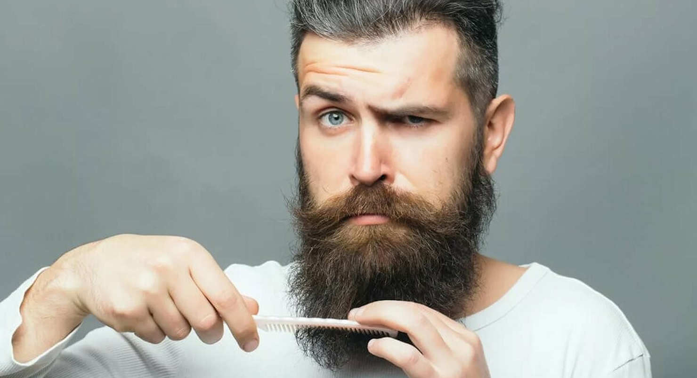

Find people with high expectations and a low tolerance for excuses. They’ll have higher expectations for you than you have for yourself. Don’t flatter yourself that this has much to do with you – this is just who they are. Don’t look for “nice” in these relationships. Look for trust.
BE FEARLESS IN FRONT OF THEM WITH YOUR IDEAS AS MANY TIMES AS THEY’LL LET YOU
Beauty Dust is very pretty to look at and it tastes like nothing, which is great. Here is what it’s supposed to do: This ancient empiric formula expands beauty through alchemizing elements legendary for their youth preserving, fortifying and tonifying qualities. Glowing supple skin, lustrous shiny hair and twinkling bright eyes are holistically bestowed from the inside out.
I actually first read this as alkalizing meaning effecting pH level, and I was like, OK I guess I understand how that could positively effect your body, but alchemizing means turning elements to gold basically through magic. That lead me to research each ingredient because I know alchemy is not actually happening in my body when I eat this, since alchemy is not real.
In addition to loving beauty and taking care of myself, I also love opening people minds to other paths of self-care, and good marketing and I can honestly say that I use and personally love this product but I’m not sure for which reason.
I THINK IT MADE ME THINK ABOUT IT MORE AND REALLY CONSIDER WHY I WAS CHOOSING TO ADD THIS TO MY ROUTINE
It poses an interesting question for me on the wellness category – will people be willing to buy in, or does eating something change your “sniff” test on the believe-ability of the claims?
The color is very long lasting and they have an interesting texture that’s like a powder and a cream but neither really. They’re made with pure pigments and oils and will never melt with the warmth of your skin because they don’t contain any waxes. You can literally use them for anything – obviously as eye shadow and liner, but the light shade is a great highlighter, and the red can be used for lip or blush with a little balm.
There’s also a little pouch to store the rollerballs, and a card with different inspirations as to how to blend them on your skin – but it’s foolproof. You can’t make a mess if you mix them all up.
Badger Beard Balm is perfect for the bearded gents in your life (is this everyone? beards are so trending). It is filled with good things such as vitamins A, D, E & F to keep his beard healthy, thicker and cleaner, as well as helping to relieve itchiness as it soothes the skin under the hair.
IF YOU’RE LOOKING TO GET RID OF THIS BEARD, MAYBE THIS IS NOT THE RIGHT ANGLE FOR YOUR GIFTING
Further, no one wants to cuddle with a dirty beard – who knows, maybe you already are and are dying for a nice way to help this problem of yours his. Beard Wash made by Beard Buddy. Started in 2011 in California, all Beard Buddy products are hand crafted by beards for beards. Both founders have large beards of their own to tame, and wanted to do this with organic products – kudos, and cuddles, to them.